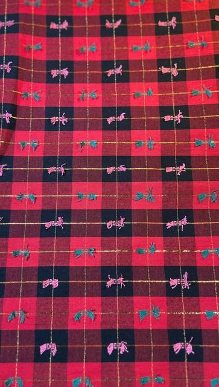
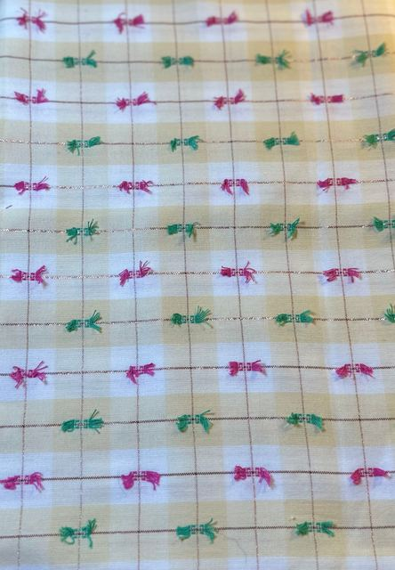
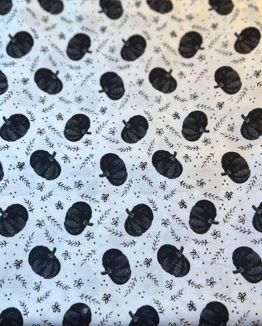

Dragon Ink and Thread
Market Cut List
Bows, bandanas and scrunchies for the October markets · measure first, cut second
Sew forSat Oct 10
Step 1 Measure the shelf — before any cutting
| Fabric | Need | On shelf | Goes into | |
|---|---|---|---|---|
 | Bowknots in Scarlet | 2¾ yd | yd | 5 bows · 2 bandana fronts · 3 scrunchies |
 | Bowknots in Cream | 1½ yd | yd | 3 bows · 2 bandana backs |
 | Amber Wildflowers | ¾ yd (1½) | yd | 1 bow · 1 bandana back · (3 scrunchies) |
 | Midnight Harvest | ½ yd | yd | 1 bow · 1 bandana back |
 | Friendly Hauntings | ½ yd | yd | 1 bow · 1 bandana front |
 | Pumpkin Patch Picnic | ½ yd | yd | 1 bandana front — too big a print for bows |
| spider web | Spider web | ¼ yd | yd | 1 bow — same print as the pattern bow |
Short on Bowknots? Keep Scarlet for the bows and bandanas, and make the gift card holders in Cream. Those aren't counted above.
Step 2 Bows · 12
Bowknots in ScarletChristmas · the easy seller
Bowknots in CreamChristmas · softer, so fewer
Midnight HarvestHalloween or fall
Friendly HauntingsHalloween onlyspider
webSpider webmatches the pattern bow
webSpider webmatches the pattern bow
Amber Wildflowersfall · sells to ThanksgivingStep 3 Bandanas · 4
Scarlet / CreamMedium · 13–18″ neck
Scarlet / CreamLarge · 18–23″ neck
Pumpkin Patch / AmberLarge · sells into NovemberHauntings / Midnight HarvestMedium · for Oct 30Reversible, front / back. A fat quarter per side for Medium, ½ yd per side for Large.
Step 4 Scrunchies · 3
Bowknots in Scarlet¼ yd each
Amber Wildflowersonly if there's a spare hourLeave on the shelf
Cauldron ForgedAlready a bow in stock — put it with the Halloween ones
Pumpkin Patch Picnic bowsThe pumpkins are too big and get chopped up
Postmarked SunshineSunflower postcards only show on a tote